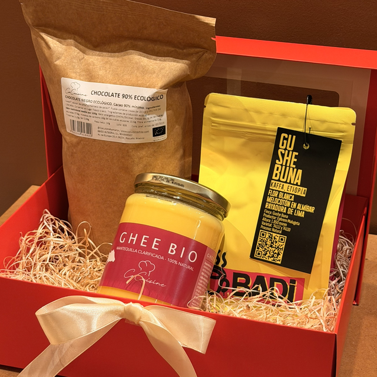
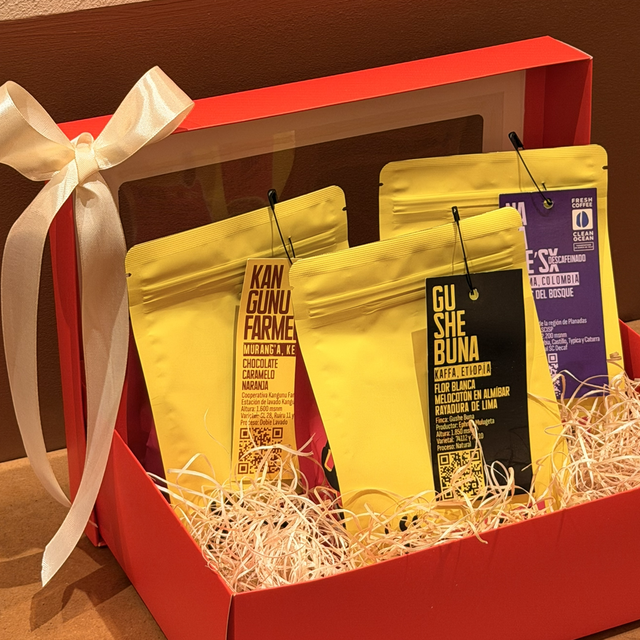
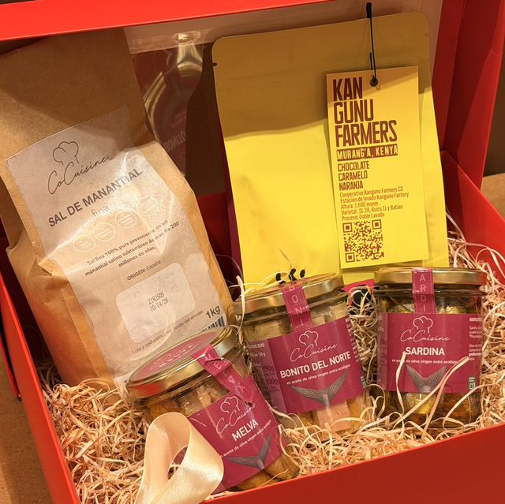
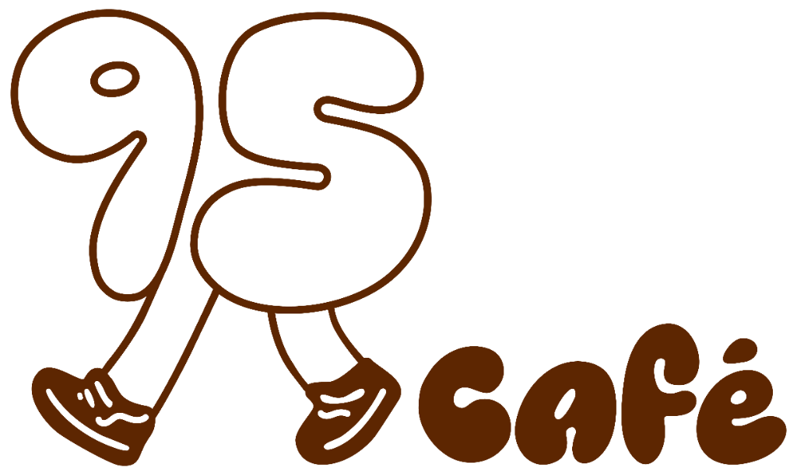

Café de Especialidad
Hecho con pasión, servido con cariño.
Disfruta del mejor café de especialidad en Madrid.
- ☕ Especialidad
- 🥑 Healthy
- 🐾 Dog Friendly
- 🏃♂️🚴 Running & Cycling
Café de Especialidad
Hecho con pasión, servido con cariño.
Disfruta del mejor café de especialidad en Madrid.

Selección de cafés de especialidad y packs gourmet para disfrutar en casa.

Recogida en tiendaGushe Buna · Etiopía (250 g, BADi Coffee Roasters), Chocolate 90 % Eco y Ghee Eco de Cocuisine. 10 % de descuento.

Recogida en tiendaTres orígenes de BADi Coffee Roasters (750 g): Kan Gunu Farmers (Kenia), Gushe Buna (Etiopía) y Nasa We'sx (Colombia Descafeinado). 10 % de descuento.

Recogida en tiendaKan Gunu Farmers · Kenia (250 g) con conservas en AOVE ecológico (bonito del norte, melva y sardinas) y sal de manantial (1 kg) de Cocuisine. 10 % de descuento.

P.º de Juan Antonio Vallejo-Nájera Botas, 55
Arganzuela, 28005 Madrid, España
Horario
Lun - Mar: Cerrado
Mié - Dom: 8:30 - 17:30
@95cafe.madrid